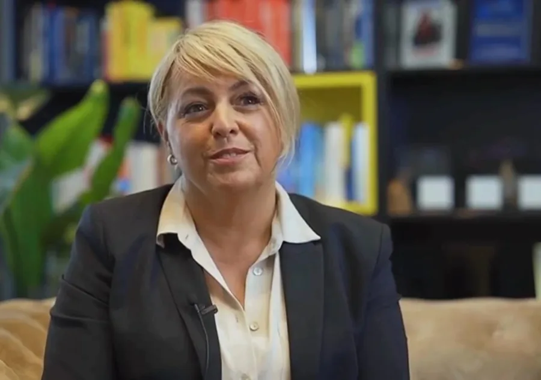

Meine Geschichte
Claudia erzählt, woher ihr Gespür für Stimmen kommt. Das Video stand bisher auf der Seite „Über mich“ neben ihrer Geschichte.
Video bei Vimeo („Video über mich“) · 10:19 Minuten · lädt erst auf Klick
Video wird noch gekürzt (Familien-Stelle), bitte Originaldatei.
Abschrift fehlt noch: Sie kommt mit der Originaldatei, damit der gesprochene Text hier wörtlich steht.